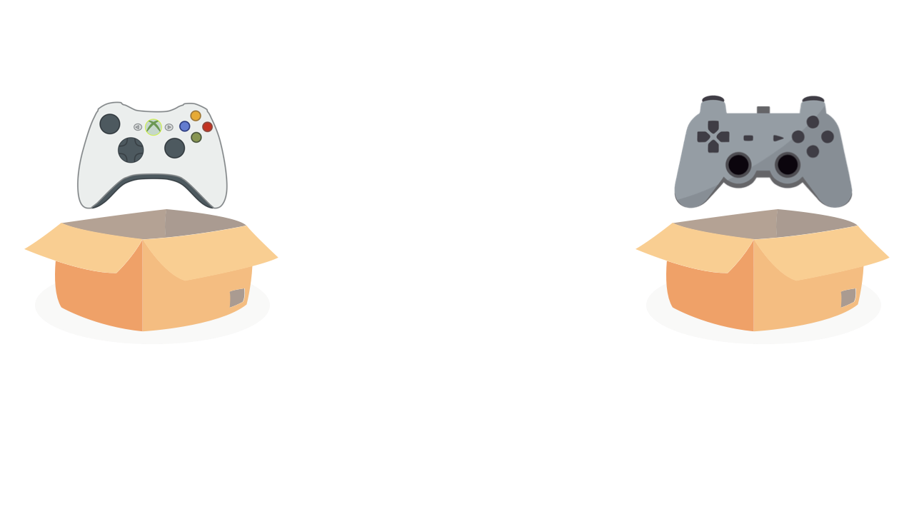

Pasadena
California
Howard Wolowitz
Before Category Theory
After Category Theory
Sheldon Cooper
“A monad is just a monoid in the category of endofunctors.”
Absolutely lost
Nicolás Patarino
@npatarino
Absolutely lost
Category Theory
“The maths of the maths”
“Category is the study how things compose.
Avoid details, just abstractions”
“Category Theory it‚Äôs a graph.
Nodes are Objects and Edges are methods”
Teaching methods
Disclaimer
The curse of the monad
“Once you get the epiphany, once you understand...
Oh, that's what a monad is.
You lose the ability to explain it to anybody.” Douglas Crockford
Object oriented programming
Decompose problems into smaller ones
Compose little parts to have a program
Design patterns
Design patterns
- Offer solutions
- Offer vocabulary
Bernadette explanation
The indecision amalgamation
The indecision amalgamation
The indecision amalgamation

The indecision amalgamation
The indecision amalgamation
The indecision amalgamation
The indecision amalgamation
The indecision amalgamation

The indecision amalgamation
The indecision amalgamation
The indecision amalgamation

The indecision amalgamation

The indecision amalgamation

Functor

Monad
Functor
Monad
Too simple
Amy explanation
Basic concepts
Composition
Composition
\[\begin{aligned} A \xrightarrow{\qquad f\qquad} B \xrightarrow{\qquad g\qquad} C \\ \end{aligned} \]
\[\begin{aligned} A \xrightarrow{\qquad f \circ g \qquad} C \\ \end{aligned} \]
-
fun getBottle() : Bottle -
fun fillGlass(bottle: Bottle) -
fillGlass(getBottle()) = getBottleAndFillGlass()
Basic concepts
Closure operator
Closure operator
fun <A> method(a: A): A = work(a)fun dollarsToEuro(dollars: Double): Double = dollars * 0.89Basic concepts
Associativity
Associativy
\[\begin{aligned} h \circ (g \circ f) = (h \circ g) \circ f \\ \end{aligned} \]
-
fun sum(a: Int, b: Int): Int = a + b -
fun validation() = sum(3, sum(4, 5)) == sum(sum(3, 4), 5)
Basic concepts
Identity
Identity
\[\begin{aligned} A == A \\ \end{aligned} \]
\[\begin{aligned} f \circ id_{a} == f == id_{b} \circ f \\ \end{aligned} \]
val text = "Big Bang Category Theory".plus("")val number = 2019.plus(0)Typeclasses
Design patterns ~ Typleclasses
- Offer solutions
- Offer vocabulary
- Laws of maths
- Independence (libraries, technology, languages)
Typeclasses
Typeclasses
- Monoid
- Functor
- Applicative
- Monad
Monoid
- Combiner
- method: combine()
empty() -
fun <A> A.combine(b: A): A = this.plus(b)fun <A> A.empty(): A
Monoid - Definition
interface Monoid<F> {
fun F.combine(b: F): F
fun empty(): F
}
Monoid - Implementation
object StringMonoid : Monoid<String> {
override fun String.combine(b: String): String = "${this}$b"
override fun empty(): String = ""
}
object IntMonoid : Monoid<Int> {
override fun Int.combine(b: Int): Int = this + b
override fun empty(): Int = 0
}
Functor
Functor
- Transformer
- method: map()
-
\[\begin{aligned} A \rightarrow map() \rightarrow B \\ \end{aligned} \]
Functor - Definition
interface Functor<out F> {
fun <B> map(transformation: (F) -> B): Functor<B>
}
Functor - Option
sealed class Option<out F> : Functor<F> {
data class Some<F>(val value: F) : Option<F>()
object None : Option<Nothing>()
override fun <B> map(transformation: (F) -> B): Option<B> = when (this) {
is Some -> Some(transformation(value))
None -> None
}
}
Functor - Option
sealed class Option<out F> : Functor<F> {
data class Some<F>(val value: F) : Option<F>()
object None : Option<Nothing>()
override fun <B> map(transformation: (F) -> B): Option<B> = when (this) {
is Some -> Some(transformation(value))
None -> None
}
}
Functor - Either
sealed class Either<out E, out F> : Functor<F> {
data class Left<E>(val error: E) : Either<E, Nothing>()
data class Right<F>(val value: F) : Either<Nothing, F>()
override fun <B> map(transformation: (F) -> B): Either<B, E> = when (this) {
is Right -> Right(transformation(value))
is Left -> this
}
}
Functor - Either
sealed class Either<out E, out F> : Functor<F> {
data class Left<E>(val error: E) : Either<E, Nothing>()
data class Right<F>(val value: F) : Either<Nothing, F>()
override fun <B> map(transformation: (F) -> B): Either<B, E> = when (this) {
is Right -> Right(transformation(value))
is Left -> this
}
}
Functor - Either
sealed class Either<out E, out F> : Functor<F> {
data class Left<E>(val error: E) : Either<E, Nothing>()
data class Right<F>(val value: F) : Either<Nothing, F>()
override fun <B> map(transformation: (F) -> B): Either<B, E> = when (this) {
is Right -> Right(transformation(value))
is Left -> this
}
}
Functor - Usage
-
val optionUser = Option.Some("Lise Meitner")
val optionNone: Option<String> = Option.None
-
val transformed = optionUser.map { it.capitalize() }
val transformedNone = optionNone.map { it.capitalize() }
-
transformed // Some(value=Lise Meitner)
transformedNone // None
Monad
Monad + monoid + functor
Box smasher
method: flatmap()
Box<Box<A>> → flatmap() → Box<A>
Monad - Definition
fun <A, B> Monad<A>.flatMap(transform: (A) -> Monad<B>): Monad<B>
Monad - Option
sealed class Option<out A> : Monad<A> {
...
fun <B> flatMap(f: (A) -> Option<B>): Option<B> = when (this) {
is Option.Some -> f(value)
is Option.None -> this
}
}
Monad - Usage
getOption().flatMap(::operation)
.flatMap(::otherOperation)
.map(println)
Daily usage
Transformations
Functor
var twitter = null
if (user != null) {
twitter = user.twitter
}
// Option<User>
val twitter = user.map { it.twitter }
Option.Some(user).map { it.twitter } // Some(“npatarino”)
Option.None .map { it.twitter } // None
Error handling
Exceptions
public interface Repository {
Movie getMovie(String id)
}
public void run() {
try {
final Movie movie = repository.getMovie("1");
println(movie)
} catch (Exception e) {
System.out.println("Ouch! Error: " + e.getLocalizedMessage());
}
}
Exceptions
public interface Repository {
Movie getMovie(String id) throws IOException, NoSuchFieldException;
}
public void run() {
try {
final Movie movie = repository.getMovie("1");
println(movie)
} catch (NoSuchFieldException e) {
System.out.println("Not movie found error: " + e.getLocalizedMessage());
} catch (IOException e) {
System.out.println("Network error: " + e.getLocalizedMessage());
}
}
Exceptions
public interface Repository {
Movie getMovie(String id) throws NetworkException, NotMovieException;
}
public void run() {
try {
final Movie movie = repository.getMovie("1");
println(movie)
} catch (NotMovieException e) {
System.out.println("Not movie found error: " + e.getLocalizedMessage());
} catch (NetworkException e) {
System.out.println("Network error: " + e.getLocalizedMessage());
}
}
Exceptions
- Very expensive (fillInStackTrace)
- Unchecked exceptions
- Unsealed hierarchies
- More complex flows
- Should be exceptional
Exceptions
public interface Repository {
Movie getMovie(String id) throws NetworkException, NotMovieException;
}
public void run() {
try {
final Movie movie = repository.getMovie("1");
println(movie)
} catch (NotMovieException e) {
System.out.println("Not movie found error: " + e.getLocalizedMessage());
} catch (NetworkException e) {
System.out.println("Network error: " + e.getLocalizedMessage());
}
}
Functor
interface Repository {
fun getMovie(id: String): Either<MovieError, Movie>
}
fun getMovie(id: String, repository: Repository) {
val movie = repository.getMovieById(id)
when (movie) {
is Either.Right -> handleSuccess(movie.value)
is Either.Left -> handleError()
}
}
Dependency
Mobile Virtual Presence Device
Shelbot
- Buy hardware → Hardware
- Assemble hardware → Device
- Connect device to Internet → Robot
- Put T-Shirt to robot → Shelbot
Shelbot
var shelbot: Sheldon? = null
val hardware = buyHardware()
if (hardware != null) {
val device = assemble(hardware)
if (device != null) {
val robot = connectToInternet(device)
if (robot != null) {
shelbot = putTShirt(robot)
}
}
}
Shelbot
val shelbot: Option<Sheldon> =
buyHardware().flatMap { hardware ->
assemble(hardware).flatMap { device ->
connectToInternet(device).flatMap { robot ->
putTShirt(robot)
}
}
}
Monad comprehensions
binding {
val (hardware) = buyHardware()
val (device) = assemble(hardware)
val (robot) = connectToInternet(device)
val (shelbot) = putTShirt(robot)
shelbot
}
Sum up
- Typeclases ~ Design patterns üòÆü§´
- Monoid
- Combiner
- Functor
- Transformer
- Monad
- Box smasher
Should I study Category Theory?
Carpenter - Advanced trigonometry
Miner - biology
X-Space Toilet - Gastric juice
Functional Programming - Category Theory
Last things
- Zygohistomorphic prepromorphisms
- Yoneda Lemma
- Symmetric monoidal category
A monad is just a monoid in the category of endofunctors.
A monad is just a monoid (combine + empty) in the category of endofunctors (~ functor) (map) (flatMap)